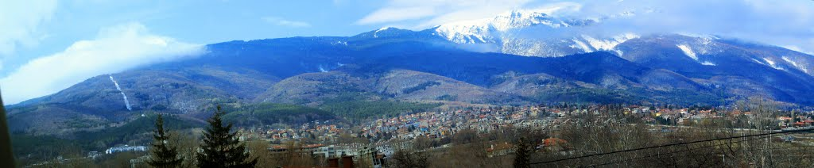

Витоша е планина в Западна България. Най-високата ѝ точка е Черни връх (2290 m[1]). Така тя се нарежда на четвърто място по височина в България след Рила, Пирин и Стара планина.
Витоша се намира между Стара планина и Рило-Родопския масив и е част от Средногорието. Тя е единствената куполообразна планина в България и основното и било се откроява добре от останалите планински масиви. То върви по върховете Черни връх, Резньовете, Скопарник и Острица, в посока северозапад-югоизток.
Планината е част от Завалско-Планската планинска редица на Средногорието, като границите ѝ са следните:
на север и североизток – Софийската котловина ОЩЕ .........
ОЩЕ .........

По последни данни на НСИ към 2015 г. населението му е от 74 824 души, което го прави най-многочисления град в Западна България след столицата София и на 11-то място в страната
 ОЩЕ .........